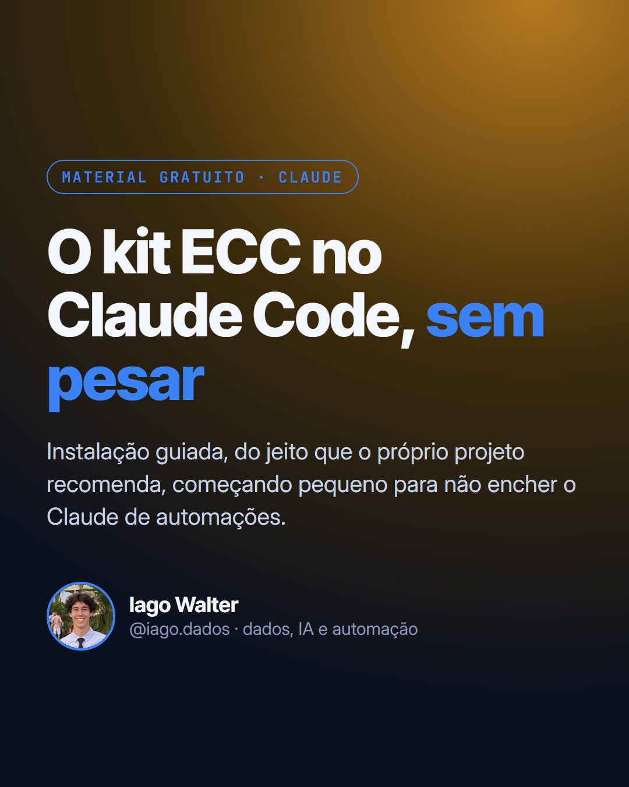
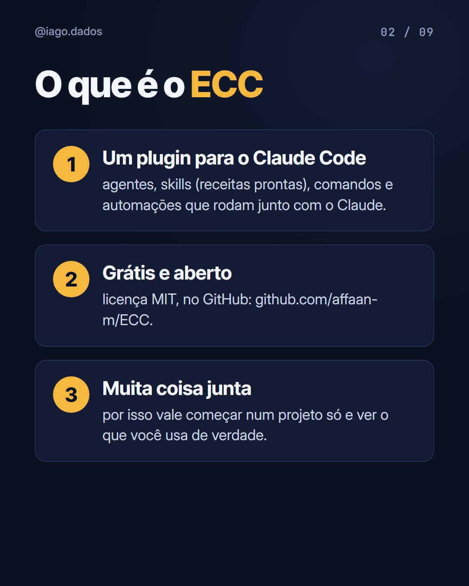
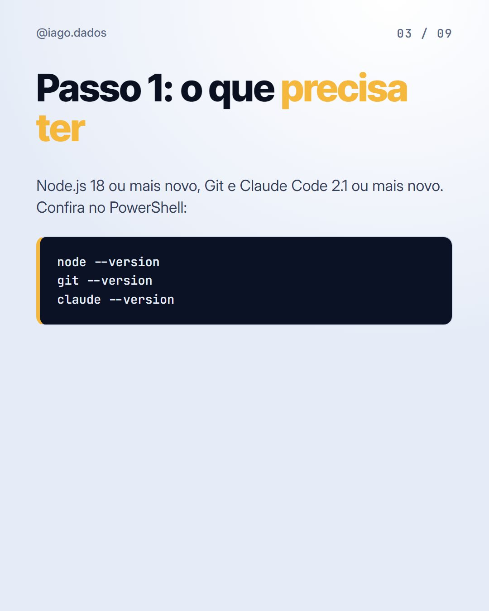
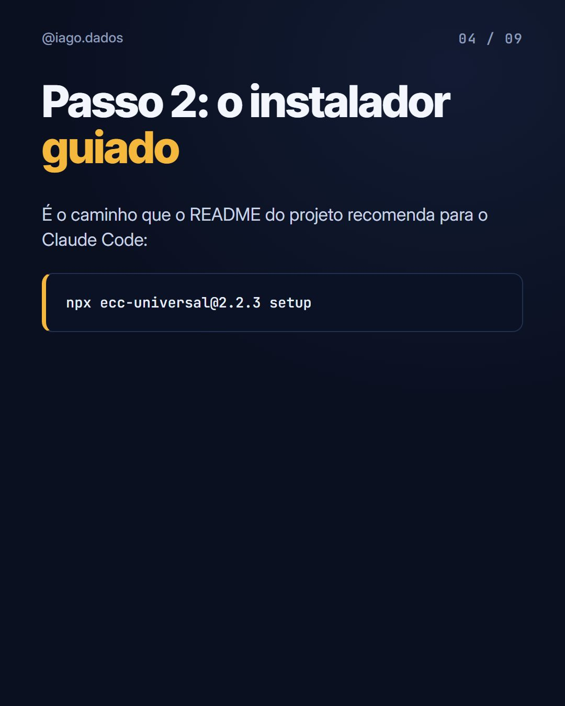

Instalação guiada, do jeito que o próprio projeto recomenda, começando pequeno para não encher o Claude de automações.




Eu ajudo empresas a usar IA no dia a dia com processo, segurança e automação, sem virar bagunça.
Falar comigo no direct